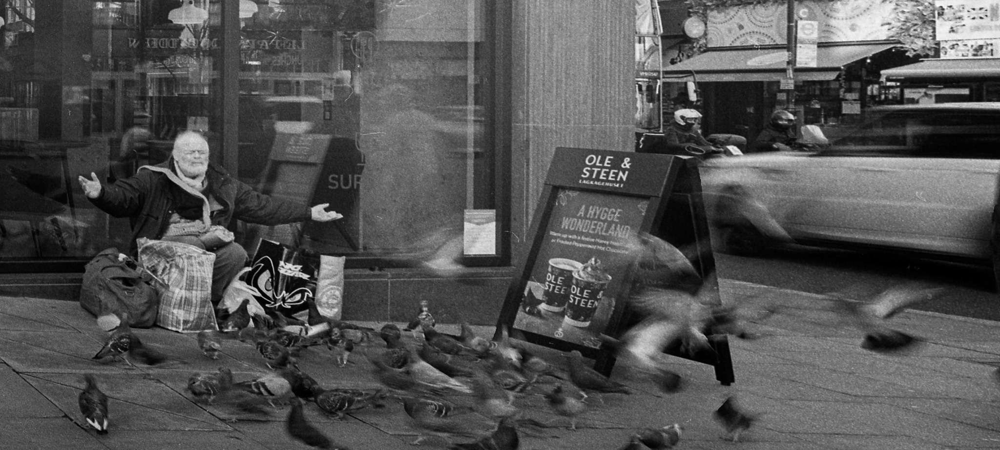
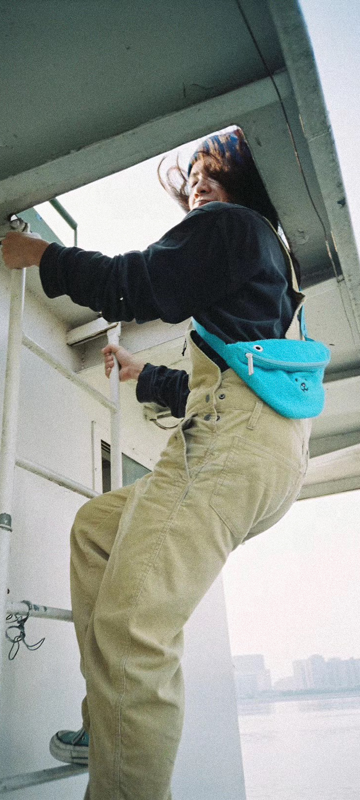

Works

Hiking in Mont Blanc. Bourg Saint Maurice
Camping in Mont Blanc. Saint Gervais les Bains

China Academy of Art. Hangzhou

Newsstand. Hangzhou

Notting Hill. London

Bike thief. London

Street life. Hangzhou
Sunbathing bike. Hangzhou
Bus. Hangzhou

'MOKI Magic music by improviser Kahil El'Zabar and other musicians. ICA.

